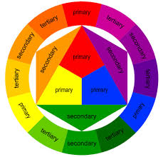
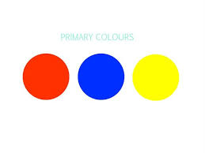
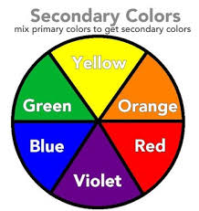
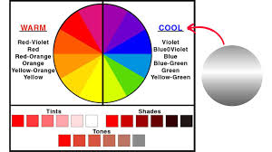

Color Theory
Color theory is the study of how colors interact, combine, and influence perception. In graphic design, color is one of the most powerful tools for communication because it affects mood, creates emphasis, and establishes harmony within a composition.
The Color Wheel

The color wheel organizes colors into a circular diagram, showing relationships between primary, secondary, and tertiary colors. Designers use it to understand mixing, complementing, and contrasting colors.
Primary Colors

Red, blue, and yellow are the primary colors. They cannot be created by mixing other colors but combine to form all other hues.
Secondary Colors

Secondary colors include green, orange, and purple, formed by mixing two primary colors (e.g., red + blue = purple).
Tertiary Colors

Tertiary colors are created by mixing a primary color with a neighboring secondary color, like blue-green or red-orange.
Warm vs Cool Colors

Warm colors (red, orange, yellow) evoke energy and excitement, while cool colors (blue, green, purple) suggest calmness and stability. Designers use warm colors to attract attention and cool colors to create balance.
Color Harmony

Color harmony occurs when colors are combined in a visually pleasing way. Common schemes include complementary (opposite on the wheel), analogous (adjacent on the wheel), and triadic (three evenly spaced colors).